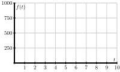
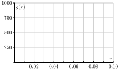
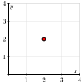
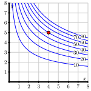

Section 10.2 First-Order Partial Derivatives
Motivating Questions
How are the first-order partial derivatives of a function \(f\) of the independent variables \(x\) and \(y\) defined?
Given a function \(f\) of the independent variables \(x\) and \(y\text{,}\) what do the first-order partial derivatives \(\frac{\partial f}{\partial x}\) and \(\frac{\partial f}{\partial y}\) tell us about \(f\text{?}\)
The derivative plays a central role in first semester calculus because it provides important information about a function. Thinking graphically, for instance, the derivative at a point tells us the slope of the tangent line to the graph at that point. In addition, the derivative at a point also provides the instantaneous rate of change of the function with respect to changes in the independent variable.
Now that we are investigating functions of two or more variables, we can still ask how fast the function is changing, though we have to be careful about what we mean. Thinking graphically again, we can try to measure how steep the graph of the function is in a particular direction. Alternatively, we may want to know how fast a function's output changes in response to a change in one of the inputs. Over the next few sections, we will develop tools for addressing issues such as these. Preview Activity 10.2.1 explores some issues with what we will come to call partial derivatives.
Preview Activity 10.2.1.
Suppose we take out an $18,000 car loan at interest rate \(r\) and we agree to pay off the loan in \(t\) years. The monthly payment, in dollars, is
What is the monthly payment if the interest rate is \(3\%\) so that \(r = 0.03\text{,}\) and we pay the loan off in \(t=4\) years?
Suppose the interest rate is fixed at \(3\%\text{.}\) Express \(M\) as a function \(f\) of \(t\) alone using \(r=0.03\text{.}\) That is, let \(f(t) = M(0.03, t)\text{.}\) Sketch the graph of \(f\) on the left of Figure 10.2.1. Explain the meaning of the function \(f\text{.}\)
Figure 10.2.1. Left: Graphs \(f(t)= M(0.03, t)\text{.}\) Right: Graph \(g(r) = M(r,4)\text{.}\) Find the instantaneous rate of change \(f'(4)\) and state the units on this quantity. What information does \(f'(4)\) tell us about our car loan? What information does \(f'(4)\) tell us about the graph you sketched in (b)?
Express \(M\) as a function of \(r\) alone, using a fixed time of \(t=4\text{.}\) That is, let \(g(r) = M(r, 4)\text{.}\) Sketch the graph of \(g\) on the right of Figure 10.2.1. Explain the meaning of the function \(g\text{.}\)
Find the instantaneous rate of change \(g'(0.03)\) and state the units on this quantity. What information does \(g'(0.03)\) tell us about our car loan? What information does \(g'(0.03)\) tell us about the graph you sketched in (d)?
Subsection 10.2.1 First-Order Partial Derivatives
In Section 9.1, we studied the behavior of a function of two or more variables by considering the traces of the function. Recall that in one example, we considered the function \(f\) defined by
which measures the range, or horizontal distance, in feet, traveled by a projectile launched with an initial speed of \(x\) feet per second at an angle \(y\) radians to the horizontal. The graph of this function is given again on the left in Figure 10.2.2. Moreover, if we fix the angle \(y = 0.6\text{,}\) we may view the trace \(f(x,0.6)\) as a function of \(x\) alone, as seen at right in Figure 10.2.2.
Since the trace is a one-variable function, we may consider its derivative just as we did in the first semester of calculus. With \(y=0.6\text{,}\) we have
and therefore
When \(x=150\text{,}\) this gives
which gives the slope of the tangent line shown on the right of Figure 10.2.2. Thinking of this derivative as an instantaneous rate of change implies that if we increase the initial speed of the projectile by one foot per second, we expect the horizontal distance traveled to increase by approximately 8.74 feet if we hold the launch angle constant at \(0.6\) radians.
By holding \(y\) fixed and differentiating with respect to \(x\text{,}\) we obtain the first-order partial derivative of \(f\) with respect to \(x\). Denoting this partial derivative as \(f_x\text{,}\) we have seen that
More generally, we have
provided this limit exists.
In the same way, we may obtain a trace by setting, say, \(x=150\) as shown in Figure 10.2.3.
This gives
and therefore
If we evaluate this quantity at \(y=0.6\text{,}\) we have
Once again, the derivative gives the slope of the tangent line shown on the right in Figure 10.2.3. Thinking of the derivative as an instantaneous rate of change, we expect that the range of the projectile increases by 509.5 feet for every radian we increase the launch angle \(y\) if we keep the initial speed of the projectile constant at 150 feet per second.
By holding \(x\) fixed and differentiating with respect to \(y\text{,}\) we obtain the first-order partial derivative of \(f\) with respect to \(y\). As before, we denote this partial derivative as \(f_y\) and write
As with the partial derivative with respect to \(x\text{,}\) we may express this quantity more generally at an arbitrary point \((a,b)\text{.}\) To recap, we have now arrived at the formal definition of the first-order partial derivatives of a function of two variables.
Definition 10.2.4.
The first-order partial derivatives of \(f\) with respect to \(x\) and \(y\) at a point \((a,b)\) are, respectively,
provided the limits exist.
Activity 10.2.2.
Consider the function \(f\) defined by
at the point \((1,2)\text{.}\)
Write the trace \(f(x,2)\) at the fixed value \(y=2\text{.}\) On the left side of Figure 10.2.5, draw the graph of the trace with \(y=2\) around the point where \(x=1\text{,}\) indicating the scale and labels on the axes. Also, sketch the tangent line at the point \(x=1\text{.}\)

Figure 10.2.5. Traces of \(f(x,y) = \frac{xy^2}{x+1}\text{.}\) Find the partial derivative \(f_x(1,2)\) and relate its value to the sketch you just made.
Write the trace \(f(1,y)\) at the fixed value \(x=1\text{.}\) On the right side of Figure 10.2.5, draw the graph of the trace with \(x=1\) indicating the scale and labels on the axes. Also, sketch the tangent line at the point \(y=2\text{.}\)
Find the partial derivative \(f_y(1,2)\) and relate its value to the sketch you just made.
As these examples show, each partial derivative at a point arises as the derivative of a one-variable function defined by fixing one of the coordinates. In addition, we may consider each partial derivative as defining a new function of the point \((x,y)\text{,}\) just as the derivative \(f'(x)\) defines a new function of \(x\) in single-variable calculus. Due to the connection between one-variable derivatives and partial derivatives, we will often use Leibniz-style notation to denote partial derivatives by writing
To calculate the partial derivative \(f_x\text{,}\) we hold \(y\) fixed and thus we treat \(y\) as a constant. In Leibniz notation, observe that
To see the contrast between how we calculate single variable derivatives and partial derivatives, and the difference between the notations \(\frac{d}{dx}[ \ ]\) and \(\frac{\partial}{\partial x}[ \ ]\text{,}\) observe that
Thus, computing partial derivatives is straightforward: we use the standard rules of single variable calculus, but do so while holding one (or more) of the variables constant.
Activity 10.2.3.
If \(f(x,y) = 3x^3 - 2x^2y^5\text{,}\) find the partial derivatives \(f_x\) and \(f_y\text{.}\)
If \(f(x,y) = \displaystyle\frac{xy^2}{x+1}\text{,}\) find the partial derivatives \(f_x\) and \(f_y\text{.}\)
If \(g(r,s) = rs\cos(r)\text{,}\) find the partial derivatives \(g_r\) and \(g_s\text{.}\)
Assuming \(f(w,x,y) = (6w+1)\cos(3x^2+4xy^3+y)\text{,}\) find the partial derivatives \(f_w\text{,}\) \(f_x\text{,}\) and \(f_y\text{.}\)
Find all possible first-order partial derivatives of \(q(x,t,z) = \displaystyle \frac{x2^tz^3}{1+x^2}.\)
Subsection 10.2.2 Interpretations of First-Order Partial Derivatives
Recall that the derivative of a single variable function has a geometric interpretation as the slope of the line tangent to the graph at a given point. Similarly, we have seen that the partial derivatives measure the slope of a line tangent to a trace of a function of two variables as shown in Figure 10.2.6.

Now we consider the first-order partial derivatives in context. Recall that the difference quotient \(\frac{f(a+h)-f(a)}{h}\) for a function \(f\) of a single variable \(x\) at a point where \(x=a\) tells us the average rate of change of \(f\) over the interval \([a,a+h]\text{,}\) while the derivative \(f'(a)\) tells us the instantaneous rate of change of \(f\) at \(x=a\text{.}\) We can use these same concepts to explain the meanings of the partial derivatives in context.
Activity 10.2.4.
The speed of sound \(C\) traveling through ocean water is a function of temperature, salinity and depth. It may be modeled by the function
Here \(C\) is the speed of sound in meters/second, \(T\) is the temperature in degrees Celsius, \(S\) is the salinity in grams/liter of water, and \(D\) is the depth below the ocean surface in meters.
State the units in which each of the partial derivatives, \(C_T\text{,}\) \(C_S\) and \(C_D\text{,}\) are expressed and explain the physical meaning of each.
Find the partial derivatives \(C_T\text{,}\) \(C_S\) and \(C_D\text{.}\)
Evaluate each of the three partial derivatives at the point where \(T=10\text{,}\) \(S=35\) and \(D=100\text{.}\) What does the sign of each partial derivatives tell us about the behavior of the function \(C\) at the point \((10,35, 100)\text{?}\)
Subsection 10.2.3 Using tables and contours to estimate partial derivatives
Remember that functions of two variables are often represented as either a table of data or a contour plot. In single variable calculus, we saw how we can use the difference quotient to approximate derivatives if, instead of an algebraic formula, we only know the value of the function at a few points. The same idea applies to partial derivatives.
Activity 10.2.5.
The wind chill, as frequently reported, is a measure of how cold it feels outside when the wind is blowing. In Table 10.2.7, the wind chill \(w\text{,}\) measured in degrees Fahrenheit, is a function of the wind speed \(v\text{,}\) measured in miles per hour, and the ambient air temperature \(T\text{,}\) also measured in degrees Fahrenheit. We thus view \(w\) as being of the form \(w = w(v, T)\text{.}\)
| \(v \backslash T\) | \(-30\) | \(-25\) | \(-20\) | \(-15\) | \(-10\) | \(-5\) | \(0\) | \(5\) | \(10\) | \(15\) | \(20\) |
| \(5\) | \(-46\) | \(-40\) | \(-34\) | \(-28\) | \(-22\) | \(-16\) | \(-11\) | \(-5\) | \(1\) | \(7\) | \(13\) |
| \(10\) | \(-53\) | \(-47\) | \(-41\) | \(-35\) | \(-28\) | \(-22\) | \(-16\) | \(-10\) | \(-4\) | \(3\) | \(9\) |
| \(15\) | \(-58\) | \(-51\) | \(-45\) | \(-39\) | \(-32\) | \(-26\) | \(-19\) | \(-13\) | \(-7\) | \(0\) | \(6\) |
| \(20\) | \(-61\) | \(-55\) | \(-48\) | \(-42\) | \(-35\) | \(-29\) | \(-22\) | \(-15\) | \(-9\) | \(-2\) | \(4\) |
| \(25\) | \(-64\) | \(-58\) | \(-51\) | \(-44\) | \(-37\) | \(-31\) | \(-24\) | \(-17\) | \(-11\) | \(-4\) | \(3\) |
| \(30\) | \(-67\) | \(-60\) | \(-53\) | \(-46\) | \(-39\) | \(-33\) | \(-26\) | \(-19\) | \(-12\) | \(-5\) | \(1\) |
| \(35\) | \(-69\) | \(-62\) | \(-55\) | \(-48\) | \(-41\) | \(-34\) | \(-27\) | \(-21\) | \(-14\) | \(-7\) | \(0\) |
| \(40\) | \(-71\) | \(-64\) | \(-57\) | \(-50\) | \(-43\) | \(-36\) | \(-29\) | \(-22\) | \(-15\) | \(-8\) | \(-1\) |
Estimate the partial derivative \(w_v(20,-10)\text{.}\) What are the units on this quantity and what does it mean? (Recall that we can estimate a partial derivative of a single variable function \(f\) using the symmetric difference quotient \(\frac{f(x+h)-f(x-h)}{2h}\) for small values of \(h\text{.}\) A partial derivative is a derivative of an appropriate trace.)
Estimate the partial derivative \(w_T(20,-10)\text{.}\) What are the units on this quantity and what does it mean?
Use your results to estimate the wind chill \(w(18, -10)\text{.}\) (Recall from single variable calculus that for a function \(f\) of \(x\text{,}\) \(f(x+h) \approx f(x) + hf'(x)\text{.}\))
Use your results to estimate the wind chill \(w(20, -12)\text{.}\)
Consider how you might combine your previous results to estimate the wind chill \(w(18, -12)\text{.}\) Explain your process.
Activity 10.2.6.
Shown below in Figure 10.2.8 is a contour plot of a function \(f\text{.}\) The values of the function on a few of the contours are indicated to the left of the figure.
Estimate the partial derivative \(f_x(-2,-1)\text{.}\) (Hint: How can you find values of \(f\) that are of the form \(f(-2+h)\) and \(f(-2-h)\) so that you can use a symmetric difference quotient?)
Estimate the partial derivative \(f_y(-2,-1)\text{.}\)
Estimate the partial derivatives \(f_x(-1,2)\) and \(f_y(-1,2)\text{.}\)
Locate, if possible, one point \((x,y)\) where \(f_x(x,y)= 0\text{.}\)
Locate, if possible, one point \((x,y)\) where \(f_x(x,y)\lt 0\text{.}\)
Locate, if possible, one point \((x,y)\) where \(f_y(x,y)>0\text{.}\)
Suppose you have a different function \(g\text{,}\) and you know that \(g(2,2) = 4\text{,}\) \(g_x(2,2) > 0\text{,}\) and \(g_y(2,2) > 0\text{.}\) Using this information, sketch a possibility for the contour \(g(x,y)=4\) passing through \((2,2)\) on the left side of Figure 10.2.9. Then include possible contours \(g(x,y) = 3\) and \(g(x,y) = 5\text{.}\)
Figure 10.2.9. Plots for contours of \(g\) and \(h\text{.}\) Suppose you have yet another function \(h\text{,}\) and you know that \(h(2,2) = 4\text{,}\) \(h_x(2,2) \lt 0\text{,}\) and \(h_y(2,2) > 0\text{.}\) Using this information, sketch a possible contour \(h(x,y)=4\) passing through \((2,2)\) on the right side of Figure 10.2.9. Then include possible contours \(h(x,y) = 3\) and \(h(x,y) = 5\text{.}\)
Subsection 10.2.4 Summary
-
If \(f=f(x,y)\) is a function of two variables, there are two first order partial derivatives of \(f\text{:}\) the partial derivative of \(f\) with respect to \(x\text{,}\)
\begin{equation*} \frac{\partial f}{\partial x}(x,y) = f_x(x,y) = \lim_{h \to 0} \frac{f(x+h,y) - f(x,y)}{h}, \end{equation*}and the partial derivative of \(f\) with respect to \(y\text{,}\)
\begin{equation*} \frac{\partial f}{\partial y}(x,y) = f_y(x,y) = \lim_{h \to 0} \frac{f(x,y+h) - f(x,y)}{h}, \end{equation*}where each partial derivative exists only at those points \((x,y)\) for which the limit exists.
The partial derivative \(f_x(a,b)\) tells us the instantaneous rate of change of \(f\) with respect to \(x\) at \((x,y) = (a,b)\) when \(y\) is fixed at \(b\text{.}\) Geometrically, the partial derivative \(f_x(a,b)\) tells us the slope of the line tangent to the \(y=b\) trace of the function \(f\) at the point \((a,b,f(a,b))\text{.}\)
The partial derivative \(f_y(a,b)\) tells us the instantaneous rate of change of \(f\) with respect to \(y\) at \((x,y) = (a,b)\) when \(x\) is fixed at \(a\text{.}\) Geometrically, the partial derivative \(f_y(a,b)\) tells us the slope of the line tangent to the \(x=a\) trace of the function \(f\) at the point \((a,b,f(a,b))\text{.}\)
Exercises 10.2.5 Exercises
1.
Find the first partial derivatives of
\(\displaystyle f(x,y) = \frac{2x - 2y}{2x + 2y}\) at the point \((x,y) = (3, 3)\text{.}\)
\(\displaystyle \frac{\partial f}{\partial x}(3, 3) =\)
\(\displaystyle \frac{\partial f}{\partial y}(3, 3) =\)
2.
Find the first partial derivatives of \(f(x, y) = \sin(x - y)\) at the point (0, 0).
A. \(f_x(0, 0) =\)
B. \(f_y(0, 0) =\)
3.
Find the partial derivatives of the function
\(\frac{\partial w}{\partial r} =\)
\(\frac{\partial w}{\partial s} =\)
\(\frac{\partial w}{\partial t} =\)
4.
Suppose that \(f(x,y)\) is a smooth function and that its partial derivatives have the values, \(f_x(5, -5) = 5\) and \(f_y(5, -5) = 3\text{.}\) Given that \(f(5, -5) = 0\text{,}\) use this information to estimate the value of \(f(6, -4)\text{.}\) Note this is analogous to finding the tangent line approximation to a function of one variable. In fancy terms, it is the first Taylor approximation.
Estimate of (integer value) \(f(5, -4)\)
Estimate of (integer value) \(f(6, -5)\)
Estimate of (integer value) \(f(6, -4)\)
5.
The gas law for a fixed mass \(m\) of an ideal gas at absolute temperature \(T\text{,}\) pressure \(P\text{,}\) and volume \(V\) is \(PV = mRT\text{,}\) where \(R\) is the gas constant.
Find the partial derivatives
\(\displaystyle \frac{\partial P}{\partial V} =\)
\(\displaystyle \frac{\partial V}{\partial T} =\)
\(\displaystyle \frac{\partial T}{\partial P} =\)
\(\displaystyle \frac{\partial P}{\partial V} \frac{\partial V}{\partial T}\frac{\partial T}{\partial P} =\) (an integer)
6.
Find the first partial derivatives of \(f(x,y,z) = z \ \arctan(\frac{y}{x})\) at the point (5, 5, 1).
A. \(\frac{\partial f}{\partial x}(5, 5, 1) =\)
B. \(\frac{\partial f}{\partial y}(5, 5, 1) =\)
C. \(\frac{\partial f}{\partial z}(5, 5, 1) =\)
7.
Find the partial derivatives of the function
\(f_x(x,y) =\)
\(f_y(x,y) =\)
8.
Let \(f(x,y) = e^{-5x}\sin\!\left(5y\right)\text{.}\)
(a) Using difference quotients with \(\Delta x = 0.1\) and \(\Delta y = 0.1\text{,}\) we estimate
\(f_x (1, 1) \approx\)
\(f_y (1, 1) \approx\)
(b) Using difference quotients with \(\Delta x = 0.01\) and \(\Delta y = 0.01\text{,}\) we find better estimates:
\(f_x (1, 1) \approx\)
\(f_y (1, 1) \approx\)
9.
Determine the sign of \(f_x\) and \(f_y\) at each indicated point using the contour diagram of \(f\) shown below. (The point \(P\) is that in the first quadrant, at a positive \(x\) and \(y\) value; \(Q\) through \(T\) are located clockwise from \(P\text{,}\) so that \(Q\) is at a positive \(x\) value and negative \(y\text{,}\) etc.)

(a) At point \(P\text{,}\)
\(f_x\) is
positive
negative
\(f_y\) is
positive
negative
(b) At point \(Q\text{,}\)
\(f_x\) is
positive
negative
\(f_y\) is
positive
negative
(c) At point \(R\text{,}\)
\(f_x\) is
positive
negative
\(f_y\) is
positive
negative
10.
Your monthly car payment in dollars is \(P = f(P_0,t,r)\text{,}\) where $\(P_0\) is the amount you borrowed, \(t\) is the number of months it takes to pay off the loan, and \(r\) percent is the interest rate.
(a) Is \(\partial P /\partial t\) positive or negative?
positive
negative
Suppose that your bank tells you that the magnitude of \(\partial P /\partial t\) is 25.
What are the units of this value?
(For this problem, write our your units in full, writing dollars for $, months for months, percent for %, etc. Note that fractional units generally have a plural numerator and singular denominator.)
(b) Is \(\partial P /\partial r\) positive or negative?
positive
negative
Suppose that your bank tells you that the magnitude of \(\partial P /\partial r\) is 5.
What are the units of this value?
(For this problem, write our your units in full, writing dollars for $, months for months, percent for %, etc. Note that fractional units generally have a plural numerator and singular denominator.)
For both parts of this problem, be sure you can explain what the practical meanings of the partial derivatives are.
11.
An experiment to measure the toxicity of formaldehyde yielded the data in the table below. The values show the percent, \(P=f(t,c)\text{,}\) of rats surviving an exposure to formaldehyde at a concentration of \(c\) (in parts per million, ppm) after \(t\) months.
| \(t=14\) | \(t=16\) | \(t=18\) | \(t=20\) | \(t=22\) | \(t=24\) | |
| \(c=0\) | 100 | 100 | 100 | 99 | 97 | 95 |
| \(c=2\) | 100 | 99 | 98 | 97 | 95 | 92 |
| \(c=6\) | 96 | 95 | 93 | 90 | 86 | 80 |
| \(c=15\) | 96 | 93 | 82 | 70 | 58 | 36 |
(a) Estimate \(f_t(20,6)\text{:}\)
\(f_t(20, 6)\approx\)
(b) Estimate \(f_c(20,6)\text{:}\)
\(f_c(20, 6)\approx\)
(Be sure that you can give the practical meaning of these two values in terms of formaldehyde toxicity.)
12.
An airport can be cleared of fog by heating the air. The amount of heat required depends on the air temperature and the wetness of the fog. The figure below shows the heat \(H(T,w)\) required (in calories per cubic meter of fog) as a function of the temperature \(T\) (in degrees Celsius) and the water content \(w\) (in grams per cubic meter of fog). Note that this figure is not a contour diagram, but shows cross-sections of \(H\) with \(w\) fixed at \(0.1\text{,}\) \(0.2\text{,}\) \(0.3\text{,}\) and \(0.4\text{.}\)

(a) Estimate \(H_T(10, 0.2)\text{:}\)
\(H_T(10,0.2) \approx\)
(Be sure you can interpret this partial derivative in practical terms.)
(b) Make a table of values for \(H(T,w)\) from the figure, and use it to estimate \(H_T(T,w)\) for each of the following:
\(T = 10, w = 0.2\) : \(H_T(T,w) \approx\)
\(T = 20, w = 0.2\) : \(H_T(T,w) \approx\)
\(T = 10, w = 0.3\) : \(H_T(T,w) \approx\)
\(T = 20, w = 0.3\) : \(H_T(T,w) \approx\)
(c) Repeat (b) to find \(H_w(T,w)\) for each of the following:
\(T = 10, w = 0.2\) : \(H_w(T,w) \approx\)
\(T = 20, w = 0.2\) : \(H_w(T,w) \approx\)
\(T = 10, w = 0.3\) : \(H_w(T,w) \approx\)
\(T = 20, w = 0.3\) : \(H_w(T,w) \approx\)
(Be sure you can interpret this partial derivative in practical terms.)
13.
The Heat Index, \(I\text{,}\) (measured in apparent degrees F) is a function of the actual temperature \(T\) outside (in degrees F) and the relative humidity \(H\) (measured as a percentage). A portion of the table which gives values for this function, \(I=I(T,H)\text{,}\) is reproduced in Table 10.2.10.
| T \(\downarrow \backslash\) H \(\rightarrow\) | 70 | 75 | 80 | 85 |
| 90 | 106 | 109 | 112 | 115 |
| 92 | 112 | 115 | 119 | 123 |
| 94 | 118 | 122 | 127 | 132 |
| 96 | 125 | 130 | 135 | 141 |
State the limit definition of the value \(I_T(94,75)\text{.}\) Then, estimate \(I_T(94,75)\text{,}\) and write one complete sentence that carefully explains the meaning of this value, including its units.
State the limit definition of the value \(I_H(94,75)\text{.}\) Then, estimate \(I_H(94,75)\text{,}\) and write one complete sentence that carefully explains the meaning of this value, including its units.
Suppose you are given that \(I_T(92,80) = 3.75\) and \(I_H(92,80) = 0.8\text{.}\) Estimate the values of \(I(91,80)\) and \(I(92,78)\text{.}\) Explain how the partial derivatives are relevant to your thinking.
On a certain day, at 1 p.m. the temperature is 92 degrees and the relative humidity is 85%. At 3 p.m., the temperature is 96 degrees and the relative humidity 75%. What is the average rate of change of the heat index over this time period, and what are the units on your answer? Write a sentence to explain your thinking.
14.
Let \(f(x,y) = \frac{1}{2}xy^2\) represent the kinetic energy in Joules of an object of mass \(x\) in kilograms with velocity \(y\) in meters per second. Let \((a,b)\) be the point \((4,5)\) in the domain of \(f\text{.}\)
Calculate \(f_x(a,b)\text{.}\)
-
Explain as best you can in the context of kinetic energy what the partial derivative
\begin{equation*} f_x(a,b) = \lim_{h \to 0} \frac{f(a+h,b) - f(a,b)}{h} \end{equation*}tells us about kinetic energy.
Calculate \(f_y(a,b)\text{.}\)
-
Explain as best you can in the context of kinetic energy what the partial derivative
\begin{equation*} f_y(a,b) = \lim_{h \to 0} \frac{f(a,b+h) - f(a,b)}{h} \end{equation*}tells us about kinetic energy.
Often we are given certain graphical information about a function instead of a rule. We can use that information to approximate partial derivatives. For example, suppose that we are given a contour plot of the kinetic energy function (as in Figure 10.2.11) instead of a formula. Use this contour plot to approximate \(f_x(4,5)\) and \(f_y(4,5)\) as best you can. Compare to your calculations from earlier parts of this exercise.
Figure 10.2.11. The graph of \(f(x,y) = \frac{1}{2}xy^2\text{.}\)
15.
The temperature on an unevenly heated metal plate positioned in the first quadrant of the \(xy\)-plane is given by
Assume that temperature is measured in degrees Celsius and that \(x\) and \(y\) are each measured in inches. (Note: At no point in the following questions should you expand the denominator of \(C(x,y)\text{.}\))
Determine \(\frac{\partial C}{\partial x}|_{(x,y)}\) and \(\frac{\partial C}{\partial y}|_{(x,y)}\text{.}\)
If an ant is on the metal plate, standing at the point \((2,3)\text{,}\) and starts walking in the direction parallel to the positive \(y\) axis, at what rate will the temperature the ant is experiencing change? Explain, and include appropriate units.
If an ant is walking along the line \(y = 3\) in the positive \(x\) direction, at what instantaneous rate will the temperature the ant is experiencing change when the ant passes the point \((1,3)\text{?}\)
Now suppose the ant is stationed at the point \((6,3)\) and walks in a straight line towards the point \((2,0)\text{.}\) Determine the average rate of change in temperature (per unit distance traveled) the ant encounters in moving between these two points. Explain your reasoning carefully. What are the units on your answer?
16.
Consider the function \(f\) defined by \(f(x,y) = 8 - x^2 - 3y^2\text{.}\)
Determine \(f_x(x,y)\) and \(f_y(x,y)\text{.}\)
Find parametric equations in \(\R^3\) for the tangent line to the trace \(f(x,1)\) at \(x=2\text{.}\)
Find parametric equations in \(\R^3\) for the tangent line to the trace \(f(2,y)\) at \(y=1\text{.}\)
State respective direction vectors for the two lines determined in (b) and (c).
Determine the equation of the plane that passes through the point \((2,1,f(2,1))\) whose normal vector is orthogonal to the direction vectors of the two lines found in (b) and (c).
Use a graphing utility to plot both the surface \(z = 8 - x^2 - 3y^2\) and the plane from (e) near the point \((2,1)\text{.}\) What is the relationship between the surface and the plane?
17.
Recall from single variable calculus that, given the derivative of a single variable function and an initial condition, we can integrate to find the original function. We can sometimes use the same process for functions of more than one variable. For example, suppose that a function \(f\) satisfies \(f_x(x,y) = \cos(y)e^x+2x+y^2\text{,}\) \(f_y(x,y) = -\sin(y)e^x+2xy+3\text{,}\) and \(f(0,0) = 5\text{.}\)
Find all possible functions \(f\) of \(x\) and \(y\) such that \(f_x(x,y) = \cos(y)e^x+2x+y^2\text{.}\) Your function will have both \(x\) and \(y\) as independent variables and may also contain summands that are functions of \(y\) alone.
Use the fact that \(f_y(x,y) = -\sin(y)e^x+2xy+3\) to determine any unknown non-constant summands in your result from part (a).
Complete the problem by determining the specific function \(f\) that satisfies the given conditions.